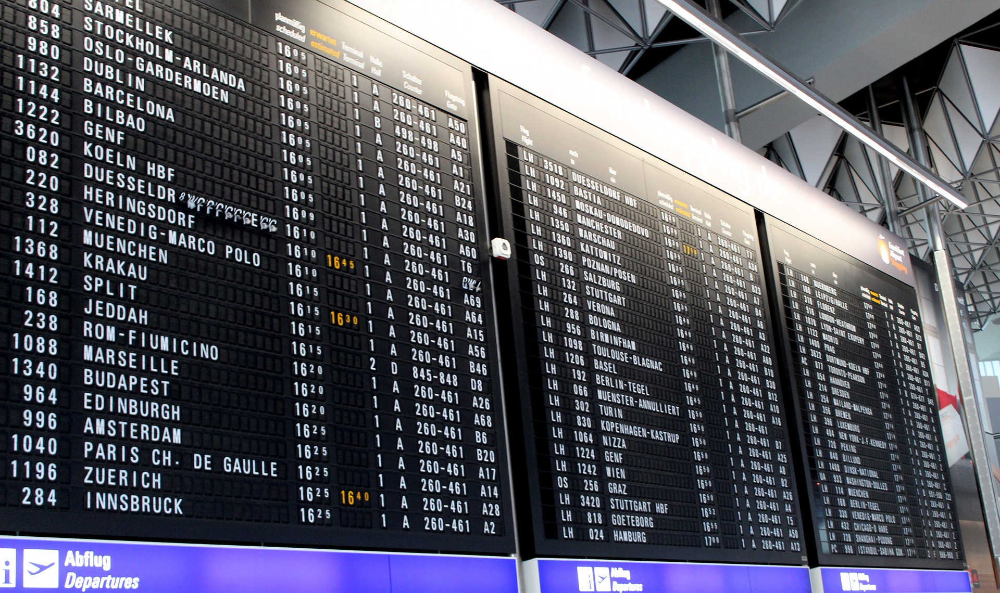

Historique d'affichage
Dans cette section vous retrouverez un historique des méthodes
d'affichage
des années 1900 à nos jours qui regroupe les affichages
numériques,
mais également les affichages analogiques modernes.

Méthodes d'affichage en GEII
Dans cette section nous approfondirons le thème des méthodes
d'affichage
propre à la section GEII au travers de différents appareils que la
filière a connus
et a vus évoluer au fil du temps.